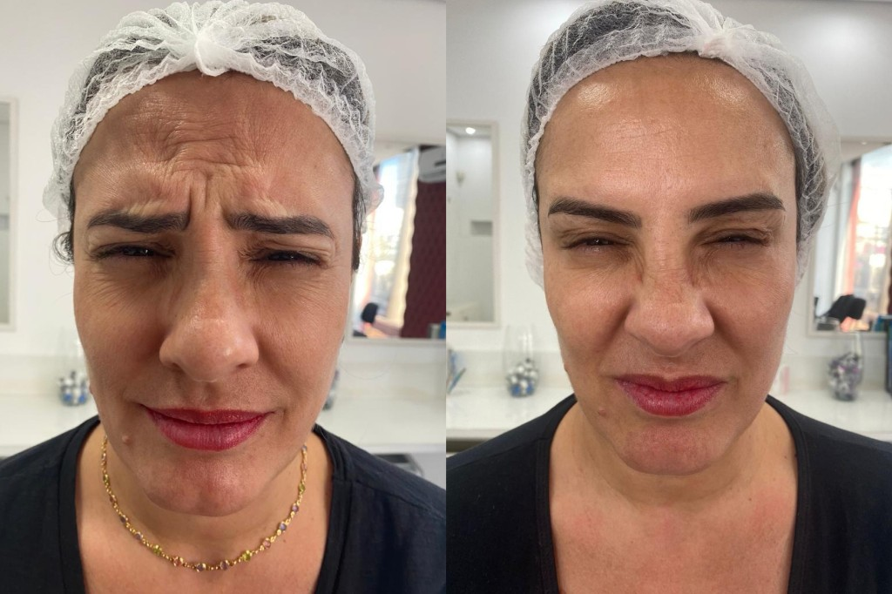
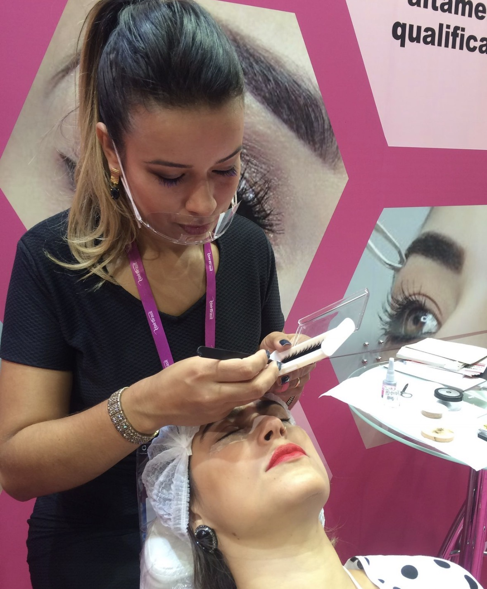

Dói aplicar toxina botulínica?
O desconforto costuma ser leve e momentâneo. A técnica e o volume de aplicação são definidos na avaliação.
Tatuapé, São Paulo
Suavização das linhas de expressão com aplicação de toxina botulínica, indicada conforme avaliação individual. Um cuidado personalizado para buscar aparência natural e harmoniosa, sem prometer resultados iguais para todas as pessoas.

O procedimento utiliza toxina botulínica em doses definidas após consulta presencial. O objetivo é suavizar linhas relacionadas à movimentação muscular, respeitando a expressão natural do rosto. Nem toda marca exige a mesma abordagem; por isso, o planejamento é feito de forma individual.
Se você deseja entender indicações, cuidados e disponibilidade de horários, nossa equipe atende pelo WhatsApp para orientar o próximo passo.
Linhas de expressão são sulcos que aparecem quando repetimos gestos faciais — como elevar as sobrancelhas, franzir a testa ou sorrir. Com o tempo, a pele pode demorar mais para voltar ao repouso e as marcas ficam visíveis mesmo sem movimento.
Elas não devem ser confundidas com outros sinais do envelhecimento cutâneo, como perda de firmeza, manchas ou alteração de textura. Cada situação exige avaliação específica; por isso, o diagnóstico presencial é fundamental.
A toxina botulínica tipo A é um medicamento registrado que, quando aplicado de forma localizada, reduz temporariamente a contração muscular ao interferir na liberação de acetilcolina na junção neuromuscular. Na prática estética, isso pode suavizar linhas associadas à movimentação do músculo tratado.
Segundo materiais oficiais de orientação ao paciente, o início do efeito costuma ser percebido em alguns dias e a duração é temporária — em geral na ordem de meses, variando conforme a pessoa, a área tratada e o plano definido na consulta. Não há efeito permanente.
Somente produtos registrados, em ambiente adequado e por profissional habilitado, conforme orientações das autoridades sanitárias brasileiras.
O procedimento pode ser considerado quando há linhas de expressão relacionadas à atividade muscular e quando a pessoa deseja suavizá-las com orientação profissional. Não é indicado para todos os perfis: gestação, lactação, infecção no local, alergia conhecida ao produto e certas doenças neuromusculares são exemplos de situações que exigem cautela ou contraindicam o tratamento.
Na consulta, avaliamos anatomia facial, expectativas realistas, medicamentos em uso e histórico de saúde. A decisão final sempre considera benefícios e riscos de forma transparente.
Eventos adversos localizados podem ocorrer, como desconforto no local, vermelhidão ou cefaleia leve. Orientações pós-procedimento fazem parte do acompanhamento. Em caso de sintomas neurológicos incomuns ou progressivos, é essencial buscar atendimento médico imediato — orientação reforçada em notas técnicas conjuntas do Ministério da Saúde e da Anvisa sobre uso de toxina botulínica.
Não prometemos resultado garantido, tempo exato de duração ou ausência total de linhas. O objetivo é um resultado harmonioso, dentro das possibilidades biológicas de cada pessoa.
O desconforto costuma ser leve e momentâneo. A técnica e o volume de aplicação são definidos na avaliação.
Em geral, a rotina leve pode ser retomada, mas orientações específicas sobre exercício, massagem na região e exposição solar são passadas após o procedimento.
Não. A toxina botulínica atua principalmente sobre a movimentação muscular. Outros sinais do envelhecimento podem exigir abordagens diferentes, combinadas ou não, conforme indicação profissional.
Entre em contato pelo WhatsApp informando que deseja saber mais sobre linhas de expressão. Informaremos horários disponíveis e documentos úteis para a consulta.
Talita Felix é especialista em estética facial e olhar, com experiência em design de sobrancelhas, micropigmentação e técnicas modernas que valorizam a beleza natural. O atendimento prioriza segurança, naturalidade e resultados harmoniosos.
Endereço: R. Itapura, 1182 — Vila Gomes Cardim, Tatuapé, São Paulo, SP — CEP 03310-000
Telefone / WhatsApp: (11) 97233-6835
Horário: Segunda a sexta, 9h às 20h; sábado, 9h às 18h.
Como chegar
Fale conosco pelo WhatsApp. Você revisa a mensagem antes de enviar.
Agendar avaliação pelo WhatsApp